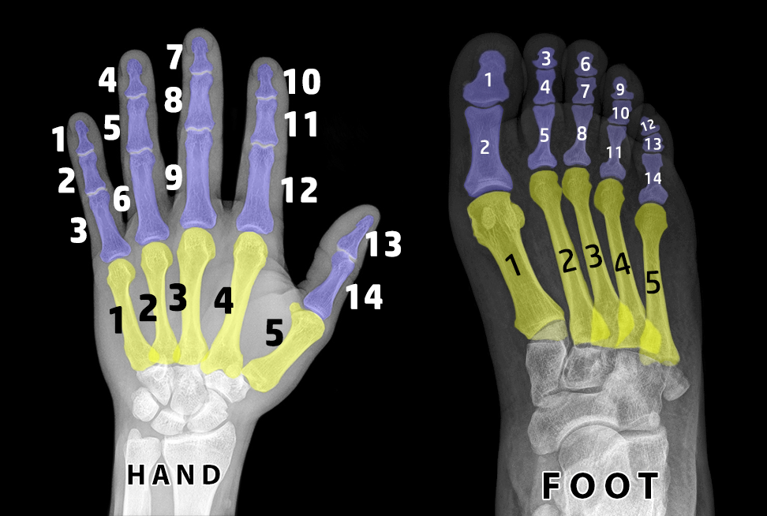

Second Messenger of The Covenant(3:81) for me: Rashad Khalifa has find both Miracle 19 in THE QURAN and Time(Year) of Resurrection Day by doing research on 7 pairs of QURAN.
Second Messenger of The Covenant(3:81) for me: Rashad Khalifa has find both Miracle 19 in THE QURAN and Time(Year) of Resurrection Day by doing research on 7 pairs of QURAN.
 Later Starting from 2015 I blessed by GOD to understand meaning of oaths in Chapter 75 Resurrection and Chapter 89 Dawn but I hide this exact knowledge until today(25.01.2023) and I will no more keep this exact clock as a secret for my self rememberance WITH WILL AND MERCY OF THE KIND GRACIOUS GOD.
Later Starting from 2015 I blessed by GOD to understand meaning of oaths in Chapter 75 Resurrection and Chapter 89 Dawn but I hide this exact knowledge until today(25.01.2023) and I will no more keep this exact clock as a secret for my self rememberance WITH WILL AND MERCY OF THE KIND GRACIOUS GOD.
Let me explain to you:
571 + 1709 = 2280
1709 = 2280
ALLAH has talked me at night of 361 th. (19 x 19) Day of year 2014 (19 x 106) at night of 27.12.2014 (2+7+1+2+2+0+1+4 = 19)

and word beled(city) occurs in all Quran as 5 times as beledet and 14 times as beled

City of Constantinople and its citizens who disbelieved in me will be destroyed by ALLAH both before doomsday and also at 5 month 14 days later from start of year 2280 together with 7 Universes!

14 June 2280 is The 5 month 14 days later from start of year 2280

and abjad value of surname of person whom ALLAH has swear up on her
in verse 75:2 is 145
14 June 2280 UTC+3 00:12:54 is 165 days, 12 minutes and 54 seconds later from start of year 2280
and abjad value of statement of لا اله الا الله which means
"THERE IS NO GOD EXCEPT THE GOD" is 165
and 1254 = 66 x 19
and abjad value of name الله (THE GOD) is 66
and abjad value of name واحد (ONE) is 19
which means Date and Time of 14 June 2280 (UTC+3) 00:12:54 is signifies that:
"THERE IS NO GOD EXCEPT THE GOD, THE GOD IS 1"
I TAKE REFUGE TO THE GOD FROM REJECTED SATAN. IN THE NAME OF THE GOD THE GRACIOUS THE MERCIFUL,
43:5 Shall we stop warning you because you have become a transgressor society?
o christians! your being a transgressed society can NOT cause no more of my hiding of that I am The Messiah Jesus: A Slave of THE GOD, and EXACT KNOWLEDGE OF THE HOUR OF THE RESURRECTION, and what you call the number of the beast 666, as in fact signifies THE COVENANT misaQ(666) OF THE GOD with HIS Prophets like me that we Prophets PROMISE TO THE GOD THAT WE WILL CERTAINLY BELIEVE AND CERTAINLY SUPPORT MESSENGERS OF THE GOD WHO CAME AFTER US(HENCE THE GOD HAS RESURRECTED ME), FOR ME THOSE MESSENGERS OF THE GOD WHO CAME AFTER ME ARE:
5. HASAN ÖZTÜRK <> (LIVING IN GERMANY & TURKEY),
4. KEIKHOSROW EMAMI <> (LIVING IN USA),
3. BAHATTİN UZUNKAYA <> (LIVED IN TURKEY),
2. RASHAD KHALIFA <> (LIVED IN USA),
1. MUHAMMED BIN ABDULLAH <> (LIVED IN SAUDI ARABIA),
74:31 ...None knows the soldiers of your OWNER EXCEPT HE...
43:36 Anyone who disregards the message of THE GRACIOUS, WE appoint a satan to be his constant companion.
43:37 Such companions will divert them from the path, yet make them believe that they are guided.
43:38 When he comes before US he will say, "Oh I wish you were as far from me as the two easts. What a miserable companion!"
43:39 Because you have done wrong, that day (your regret) will not benefit you; You will share the punishment.
43:43 Embrace what is REVEALED to you(Hour of Resurrection for me); because you are on the right path.
Honourable Glorious QURAN - Chapter 21 - The Prophets
21:0 IN THE NAME OF THE GOD THE GRACIOUS THE MERCIFUL.
21:1 Fast approaching is the reckoning for the people, but they are oblivious, averse.
21:2 When a proof comes to them from their Lord, that is new, they listen to it heedlessly.
21:3 Their minds are heedless. And the transgressors confer secretly: "Is he not just a human being like you? Would you accept the magic that is presented to you?"
21:4 He said, "My Lord knows every thought in the heaven and the earth. He is the Hearer, the Omniscient."
21:5 They even said, "Hallucinations," "He made it up," and, "He is a poet. Let him show us a miracle like those of the previous messengers."
21:6 We never annihilated a believing community in the past. Are these people believers?
21:7 WE did not send before you except males whom WE inspired. Ask those who know the scripture, if you do not know.
21:8 We did not give them bodies that did not eat, nor were they immortal.
21:9 We fulfilled our promise to them; we saved them together with whomever we willed, and annihilated the transgressors.
21:10 We have sent down to you a scripture containing your message. Do you not understand?
21:11 Many a community we terminated because of their transgression, and we substituted other people in their place.
21:12 When our requital came to pass, they started to run.
21:13 Do not run, and come back to your luxuries and your mansions, for you must be held accountable.
21:14 They said, "Woe to us. We were really wicked."
21:15 This continued to be their proclamation, until we completely wiped them out.
21:16 We did not create the heavens and the earth, and everything between them just for amusement.
21:17 If we needed amusement, we could have initiated it without any of this, if that is what we wanted to do.
21:18 Instead, it is our plan to support the truth against falsehood, in order to defeat it. Woe to you for the utterances you utter.
21:19 To Him belongs everyone in the heavens and the earth, and those at Him are never too arrogant to worship Him, nor do they ever waver.
21:20 They glorify night and day, without ever tiring.
21:21 Have they found gods on earth who can create?
21:22 If there were in them (the heavens and the earth) other gods beside GOD, there would have been chaos. Glory be to GOD; the Lord with absolute authority. He is high above their claims.
21:23 He is never to be asked about anything He does, while all others are questioned.
21:24 Have they found other gods beside Him? Say, "Show me your proof. This is the message to my generation, consummating all previous messages." Indeed, most of them do not recognize the truth; this is why they are so hostile.
21:25 We did not send any messenger before you except with the inspiration: "There is no god except Me; you shall worship Me alone."
21:26 Yet, they said, "The Gracious has begotten a son!" Glory be to Him. All (messengers) are (His) honored servants.
21:27 They never speak on their own, and they strictly follow His commands.
21:28 He knows their future and their past. They do not intercede, except for those already accepted by Him, and they are worried about their own necks.
21:29 If any of them claims to be a god beside Him, we requite him with Hell; we thus requite the wicked.
21:30 Do the unbelievers not realize that the heaven and the earth used to be one solid mass that we exploded into existence? And from water we made all living things. Would they believe?
21:31 And we placed on earth stabilizers, lest it tumbles with them, and we placed straight roads therein, that they may be guided.
21:32 And we rendered the sky a guarded ceiling. Yet, they are totally oblivious to all the portents therein.
21:33 And He is the One who created the night and the day, and the sun and the moon; each floating in its own orbit.
21:34 We never decreed immortality for anyone before you; should you die, are they immortal?
21:35 Every soul will taste death, after we put you to the test through adversity and prosperity, then to us you ultimately return.
21:36 When those who disbelieve see you, they ridicule you: "Is this the one who challenges your gods?" Meanwhile, they remain totally heedless of the message from the Gracious.
21:37 The human being is impatient by nature. I will inevitably show you My signs; do not be in such a hurry.
21:38 They challenge: "Where is that (retribution), if you are truthful?"
21:39 If only those who disbelieve could envision themselves when they try to ward off the fire - off their faces and their backs! No one will help them then.
21:40 Indeed, it will come to them suddenly, and they will be utterly stunned. They can neither avoid it, nor can they receive any respite.
21:41 Messengers before you have been ridiculed, and, consequently, those who ridiculed them incurred the retribution for their ridiculing.
21:42 Say, "Who can protect you from the Gracious during the night or during the day?" Indeed, they are totally oblivious to the message of their Lord.
21:43 Do they have gods who can protect them from us? They cannot even help themselves. Nor can they accompany one another when they are summoned to face us.
21:44 We have provided for these people and their ancestors, up until an old age. Do they not see that every day on earth brings them closer to the end? Can they reverse this process?
21:45 Say, "I am warning you in accordance with divine inspiration." However, the deaf cannot hear the call, when they are warned.
21:46 When a sample of your Lord's retribution afflicts them, they readily say, "We were indeed wicked."
21:47 We will establish the scales of justice on the Day of Resurrection. No soul will suffer the least injustice. Even the equivalent of a mustard seed will be accounted for. We are the most efficient reckoners.
21:48 We gave Moses and Aaron the Statute Book, a beacon, and a reminder for the righteous.
21:49 The ones who reverence their Lord, even when alone in their privacy, and they worry about the Hour.
21:50 This too is a blessed reminder that we sent down. Are you denying it?
21:51 Before that, we granted Abraham his guidance and understanding, for we were fully aware of him.
21:52 He said to his father and his people, "What are these statues to which you are devoting yourselves?"
21:53 They said, "We found our parents worshiping them."
21:54 He said, "Indeed, you and your parents have gone totally astray."
21:55 They said, "Are you telling us the truth, or are you playing?"
21:56 He said, "Your only Lord is the Lord of the heavens and the earth, who created them. This is the testimony to which I bear witness.
21:57 "I swear by GOD, I have a plan to deal with your statues, as soon as you leave."
21:58 He broke them into pieces, except for a big one, that they may refer to it.
21:59 They said, "Whoever did this to our gods is really a transgressor."
21:60 They said, "We heard a youth threaten them; he is called Abraham."
21:61 They said, "Bring him before the eyes of all the people, that they may bear witness."
21:62 They said, "Did you do this to our gods, O Abraham?"
21:63 He said, "It is that big one who did it. Go ask them, if they can speak."
21:64 They were taken aback, and said to themselves, "Indeed, you are the ones who have been transgressing."
21:65 Yet, they reverted to their old ideas: "You know full well that these cannot speak."
21:66 He said, "Do you then worship beside GOD what possesses no power to benefit you or harm you?
21:67 "You have incurred shame by worshiping idols beside GOD. Do you not understand?"
21:68 They said, "Burn him and support your gods, if this is what you decide to do."
21:69 We said, "O fire, be cool and safe for Abraham."
21:70 Thus, they schemed against him, but we made them the losers.
21:71 We saved him, and we saved Lot, to the land that we blessed for all the people.
21:72 And we granted him Isaac and Jacob as a gift, and we made them both righteous.
21:73 We made them imams who guided in accordance with our commandments, and we taught them how to work righteousness, and how to observe the Contact Prayers (Salat) and the obligatory charity (Zakat). To us, they were devoted worshipers.
21:74 As for Lot, we granted him wisdom and knowledge, and we saved him from the community that practiced abominations; they were wicked and evil people.
21:75 We admitted him into our mercy, for he was righteous.
21:76 And, before that, Noah called and we responded to him. We saved him and his family from the great disaster.
21:77 We supported him against the people who rejected our revelations. They were evil people, so we drowned them all.
21:78 And David and Solomon, when they once ruled with regard to someone's crop that was destroyed by another's sheep, we witnessed their judgment.
21:79 We granted Solomon the correct understanding, though we endowed both of them with wisdom and knowledge. We committed the mountains to serve David in glorifying (God), as well as the birds. This is what we did.
21:80 And we taught him the skill of making shields to protect you in war. Are you then thankful?
21:81 For Solomon, we committed the wind gusting and blowing at his disposal. He could direct it as he wished, to whatever land he chose, and we blessed such land for him. We are fully aware of all things.
21:82 And of the devils there were those who would dive for him (to harvest the sea), or do whatever else he commanded them to do. We committed them in his service.
21:83 And Job implored his Lord: "Adversity has befallen me, and, of all the merciful ones, You are the Merciful."
21:84 We responded to him, relieved his adversity, and restored his family for him, even twice as much. That was a mercy from us, and a reminder for the worshipers.
21:85 Also, Ismail, Idris, Zal-Kifl; all were steadfast, patient.
21:86 We admitted them into our mercy, for they were righteous.
21:87 And Zan-Noon (Jonah, "the one with an `N' in his name"), abandoned his mission in protest, thinking that we could not control him. He ended up imploring from the darkness (of the big fish's belly): "There is no god other than You. Be You glorified. I have committed a gross sin."
21:88 We responded to him, and saved him from the crisis; we thus save the believers.
21:89 And Zachariah implored his Lord: "My Lord, do not keep me without an heir, though You are the best inheritor."
21:90 We responded to him and granted him John; we fixed his wife for him. That is because they used to hasten to work righteousness, and implored us in situations of joy, as well as fear. To us, they were reverent.
21:91 As for the one who maintained her virginity, we blew into her from our spirit, and thus, we made her and her son a portent for the whole world.
21:92 Your congregation is but one congregation, and I alone am your Lord; you shall worship Me alone.
21:93 However, they divided themselves into disputing religions. All of them will come back to us (for judgment).
21:94 As for those who work righteousness, while believing, their work will not go to waste; we are recording it.
21:95 It is forbidden for any community we had annihilated to return.
21:96 Not until Gog and Magog reappear, will they then return - they will come from every direction.
21:97 That is when the inevitable prophecy will come to pass, and the disbelievers will stare in horror: "Woe to us; we have been oblivious. Indeed, we have been wicked."
21:98 You and the idols you worship besides GOD will be fuel for Hell; this is your inevitable destiny.
21:99 If those were gods, they would not have ended up in Hell. All its inhabitants abide in it forever.
21:100 They will sigh and groan therein, and they will have no access to any news.
21:101 As for those who deserved our magnificent rewards, they will be protected from it.
21:102 They will not hear its hissing. They will enjoy an abode where they can get everything they desire, forever.
21:103 The great horror will not worry them, and the angels will receive them joyfully: "This is your day, that has been promised to you."
21:104 On that day, we will fold the heaven, like the folding of a book. Just as we initiated the first creation, we will repeat it. This is our promise; we will certainly carry it out.
21:105 We have decreed in the Psalms, as well as in other scriptures, that the earth shall be inherited by My righteous worshipers.
21:106 This is a proclamation for people who are worshipers.
21:107 We have sent you out of mercy from us towards the whole world.
21:108 Proclaim, "I have been given divine inspiration that your god is one god. Will you then submit?"
21:109 If they turn away, then say, "I have warned you sufficiently, and I have no idea how soon or late (the retribution) will come to you.
21:110 "He is fully aware of your public utterances, and He is fully aware of everything you conceal.
21:111 "For all that I know, this world is a test for you, and a temporary enjoyment."
21:112 Say, "My Lord, Your judgment is the absolute justice. Our Lord is the Gracious; only His help is sought in the face of your claims."